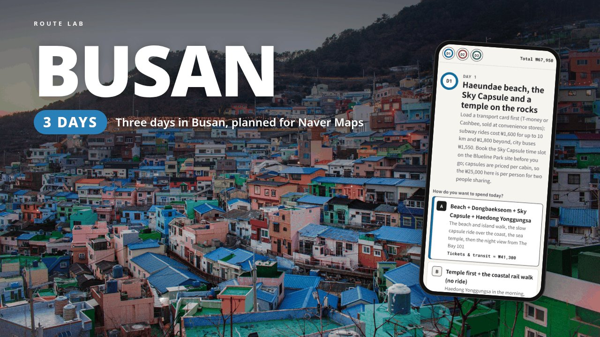

3-DAY ITINERARY · KOREA
Three days in Busan from a hotel near Busan Station: the Haeundae coast and the temple on the sea rocks at Haedong Yonggungsa, the old-town markets and Busan Tower at dusk, then the Taejongdae cliffs and the Gwangan Bridge lit up at night. Every stop links to Naver Map, which gives walking and transit directions in Korea.
This page is a free outline of the itinerary: where each day goes, what is in the file and who it suits. The download adds the stop-by-stop times, a map link and a checked price for every stop, and a budget that adds itself up as you pick.

The neighbourhoods and main stops for each of the 3 days. The download has the times, the order, a map link and a price for every stop, and the alternative plan for each day.
Haeundae Beach, the Dongbaekseom island walk and Nurimaru APEC House, the Blueline Park Sky Capsule from Mipo to Cheongsapo, the Daritdol Skywalk, the Beach Train to Songjeong, Haedong Yonggungsa temple, then The Bay 101 at night. Or Haedong Yonggungsa first and the free coastal rail walk from Songjeong.
Rain plan: Shinsegae Centum City and its Spaland hot-spring baths.
Gamcheon Culture Village, Jagalchi Fish Market, BIFF Square, Gukje Market, Yongdusan Park and Busan Tower at dusk. Or swap Gamcheon for Huinnyeoul Culture Village on Yeongdo.
Rain plan: The Jagalchi building, Gukje Market's covered lanes and Busan Tower.
The Taejongdae cliffs and lighthouse, Samjin Eomuk fish cakes, Choryang Ibagu-gil and the 168 Stairs, then Gwangalli Beach and the bridge lights from Millak Waterside Park. Or Huinnyeoul instead of Taejongdae.
Rain plan: Samjin Eomuk and Centum City.
First-time visitors to Busan who want a ready-made three-day plan with Naver Map links they can tap on the go. It's priced for two adults sharing a Sky Capsule cabin. Best days: Day 2 Monday to Saturday (Gukje Market closes on Sundays, Jagalchi on the 1st, 3rd and 5th Tuesday) and Day 3 Wednesday to Sunday. The Taejongdae Danubi train has been suspended since July 3, 2026; a free shuttle bus runs the loop Wednesday to Sunday, and the plan tells you how to walk it on other days.
It doesn't book anything and doesn't update itself. Hotels, flights, the Sky Capsule time slot and airport transfers are up to you.
US$8 on Gumroad. Personal use: for your own trip and the people you travel with. If the file is broken or won't open, you get a fix or a full refund within 14 days.